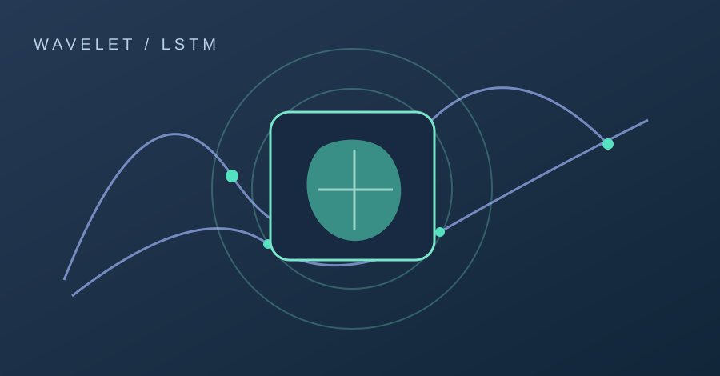
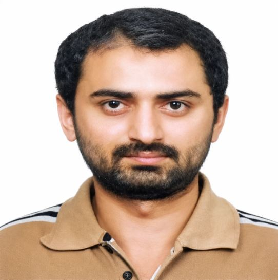
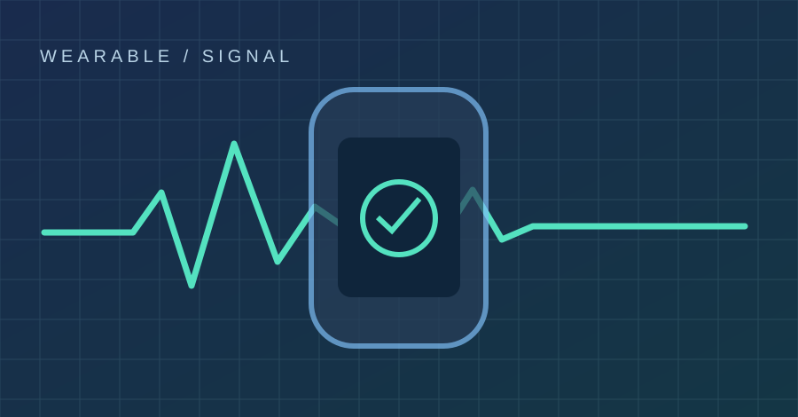
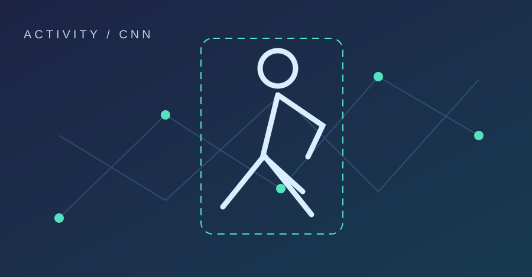
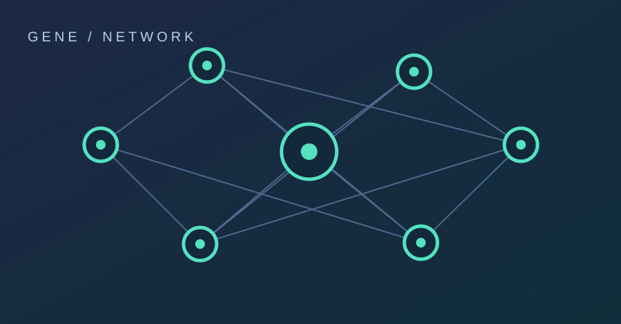

01 / 04Food Recognition with Wavelet–LSTM
A published approach to food recognition combining wavelet-based processing with an LSTM architecture.
Find publicationI’m Ghulam Hussain, an assistant professor and AI researcher using machine learning, sensor data and computational methods to explore real-world health and technology problems.

My work brings together machine learning, deep learning, computer vision and physiological sensing. My doctoral research at Sungkyunkwan University focused on AI-based pervasive sensing for health informatics.
Today, I teach computing and algorithms at the University of Larkano and develop computational projects, including an early-stage Python workflow for exploratory gene-regulatory network analysis of single-cell RNA-seq data.
See my code portfolioSelected published work and a clearly labeled research prototype.

01 / 04A published approach to food recognition combining wavelet-based processing with an LSTM architecture.
Find publication
02 / 04Machine-learning research on a smart piezoelectric wearable system for calorie intake estimation.
Read publication
03 / 04Research using convolutional neural networks and wearable-sensor information for preventive healthcare applications.
Read publication
04 / 04Python/Jupyter notebook code for exploring candidate TF–target associations in annotated AML single-cell RNA-seq data. Not yet executed end to end, benchmarked or biologically validated.
In development · No validated findingsNo projects match this filter.
Methods and tools from research, teaching and hands-on computational work.
Python, MATLAB, SQL, NumPy, pandas, scikit-learn, data preprocessing, visualization.
Supervised learning, CNNs, LSTMs, feature engineering, model evaluation, GANs.
Image recognition, YOLO, Caffe, Darknet, wearable sensors, physiological time-series.
AnnData, candidate TF–target scoring, NetworkX and single-cell data workflow development.
A foundation in engineering, research, computation and teaching.
The University of Larkano, Pakistan
Teaching Computer Organization & Assembly Language and Algorithm Development & Optimization; project supervision.Quaid-e-Awam University, Larkana Campus
Teaching electronics and computing-related subjects; departmental leadership responsibilities.Sungkyunkwan University, South Korea
Doctoral thesis: AI-Based Pervasive Sensing Health Informatics System.Mehran University of Engineering & Technology, Pakistan
Open to conversations about data science, AI research, computational health and collaborative projects.